Paso a paso: instalación, primer uso, activación de licencia, cómo diligenciar un caso, dónde quedan tus documentos descargados, y el truco para imprimir el rótulo en tamaño reducido.
Descarga el instalador desde capturadocs.com/#descargas y ejecútalo: es un archivo .exe que instala la app en tu computador. No necesitas instalar nada más — es una app de escritorio lista para usar.
Ya están disponibles y son la app completa: diligencias el caso en el lugar de los hechos y generas ahí mismo el informe, los rótulos, las cadenas y las actas, sin depender de internet. Si prefieres terminar en el computador, también puedes tocar Guardar y enviar caso y mandártelo por WhatsApp, Drive o correo para abrirlo en la app de Windows. En Android se descarga el APK desde la sección de descargas; en iPhone no se instala nada: se abre el enlace y puedes añadirlo a tu pantalla de inicio.
No, para diligenciar el formulario ni generar los documentos — eso funciona sin conexión. Sí necesitas internet en momentos puntuales: al abrir la app (verifica tu licencia), al activar o reasignar una licencia, para consultar si hay una versión nueva, y si usas la mejora de redacción con IA (esa función sí depende de una conexión activa).
La primera vez que abres la app te pide registrar tu correo (dos veces, para evitar errores de tipeo). Ese correo se usa únicamente para tu licencia y soporte — no tiene nada que ver con los datos de tus casos, que siguen siendo 100% locales.
Después de registrar el correo, la app te muestra «Configuración inicial»: cuatro datos que guarda en tu equipo y usa por defecto en cada caso nuevo — NUNC, departamento, municipio y destino del informe (URI o Fiscalía). Reemplaza lo que aparezca por los datos de tu unidad y toca Guardar y continuar. Puedes cambiarlos cuando quieras desde la pestaña Config de la ventana Acerca de.
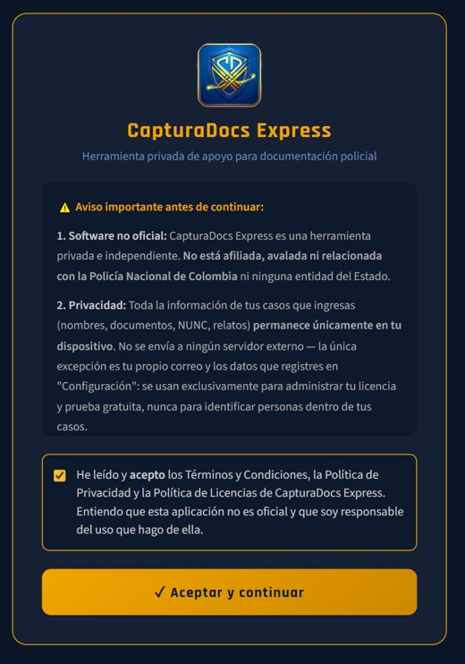
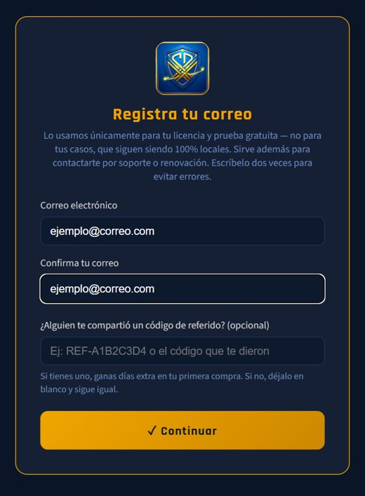
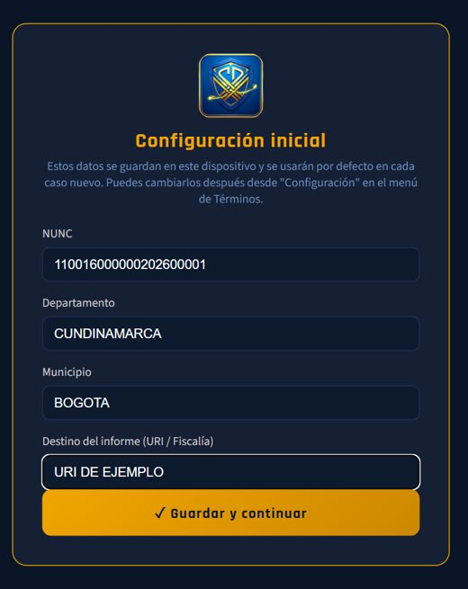
Si tienes un código de referido, este es el momento de ingresarlo — así tu compañero y tú ganan días extra cuando actives tu primera licencia (ver detalle en la sección "Programa de referidos" de la página principal).
Más adelante verás mencionado tu ID de dispositivo — es un identificador que la app genera sola en tu equipo (no es tu cédula ni ningún dato personal), y es lo que usamos para saber a cuál equipo corresponde tu licencia.
Cuando se acaben tus 5 casos gratis, o si ya quieres pasar directo a un plan pago:
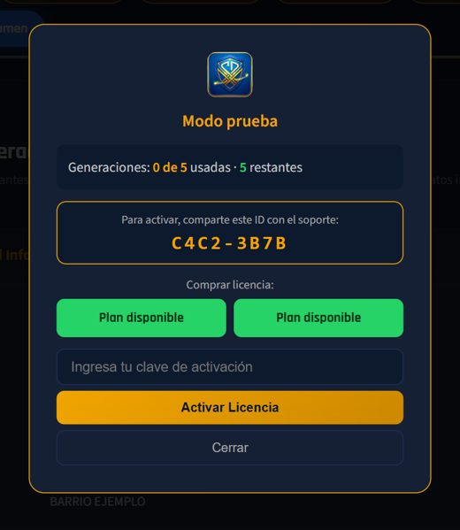
Lo primero que escoges al abrir la app es qué procedimiento vas a documentar, porque de eso dependen los pasos y los documentos que salen al final:
Vas avanzando por el menú de la izquierda. Lo que escribes una vez se reutiliza automáticamente en todos los documentos, sin que tengas que repetirlo.
En el último paso ("Resumen") encuentras el botón para generar cada documento:
Antes de generar, revisa el resumen: los campos obligatorios que falten quedan marcados en rojo, y hay un recordatorio permanente para verificar dos veces las fechas. No tienes que ir hasta el paso manualmente para corregir algo — haz clic directo sobre el valor dentro del Resumen, y te lleva directo a ese paso.
Capturas reales de la app (versión de Windows) con datos de ejemplo inventados. Toca una imagen para verla más grande.
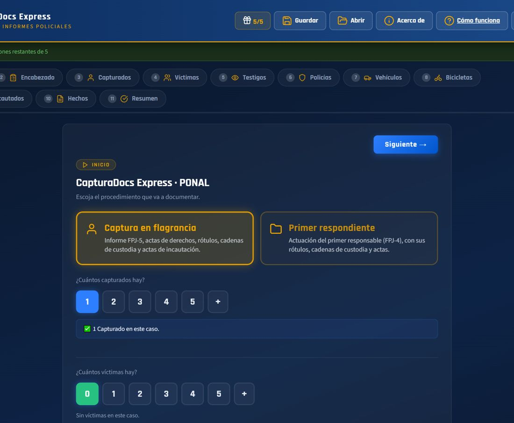
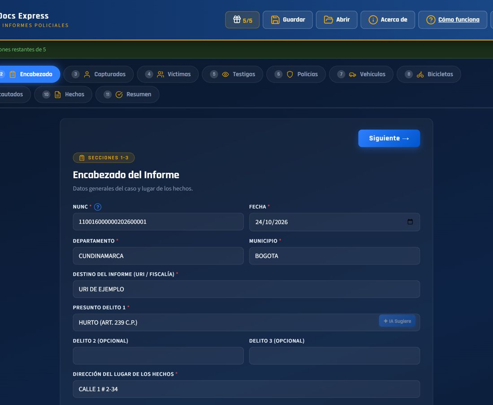
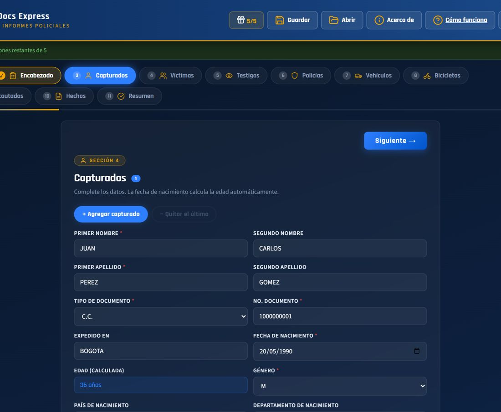
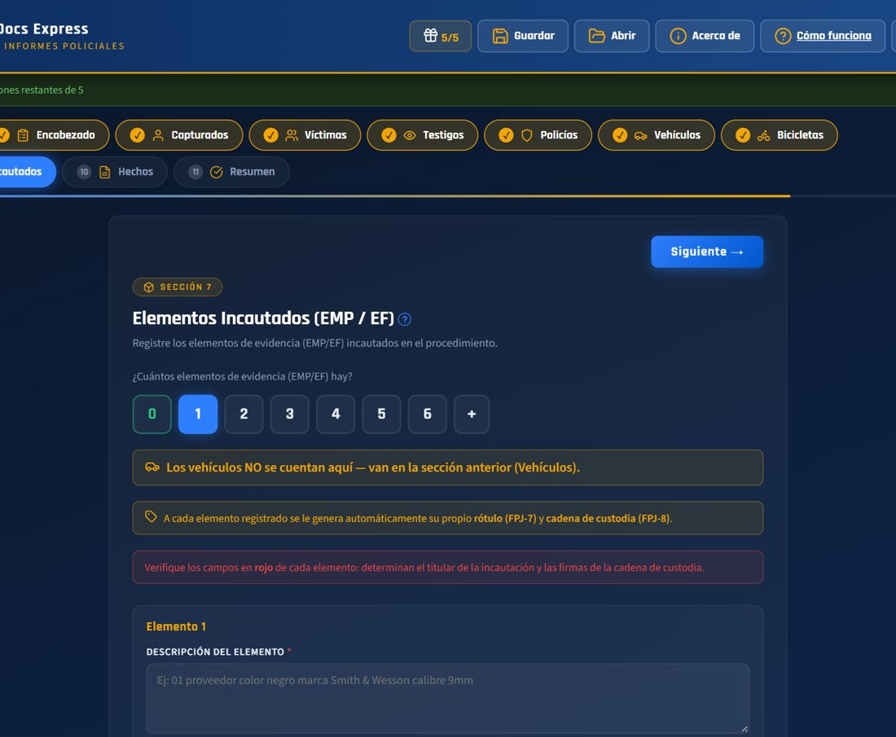
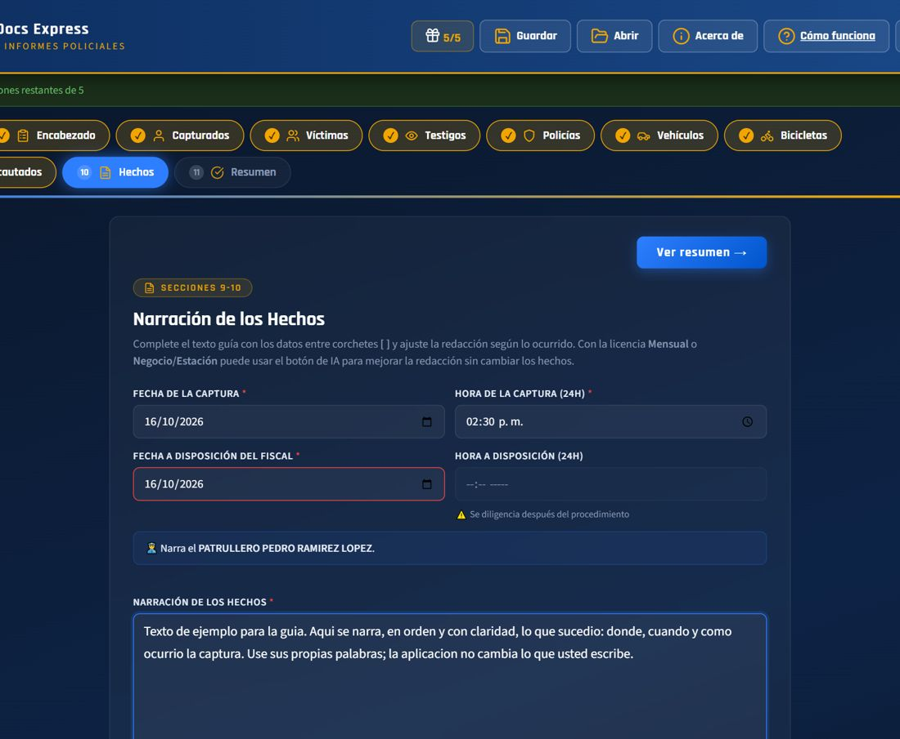
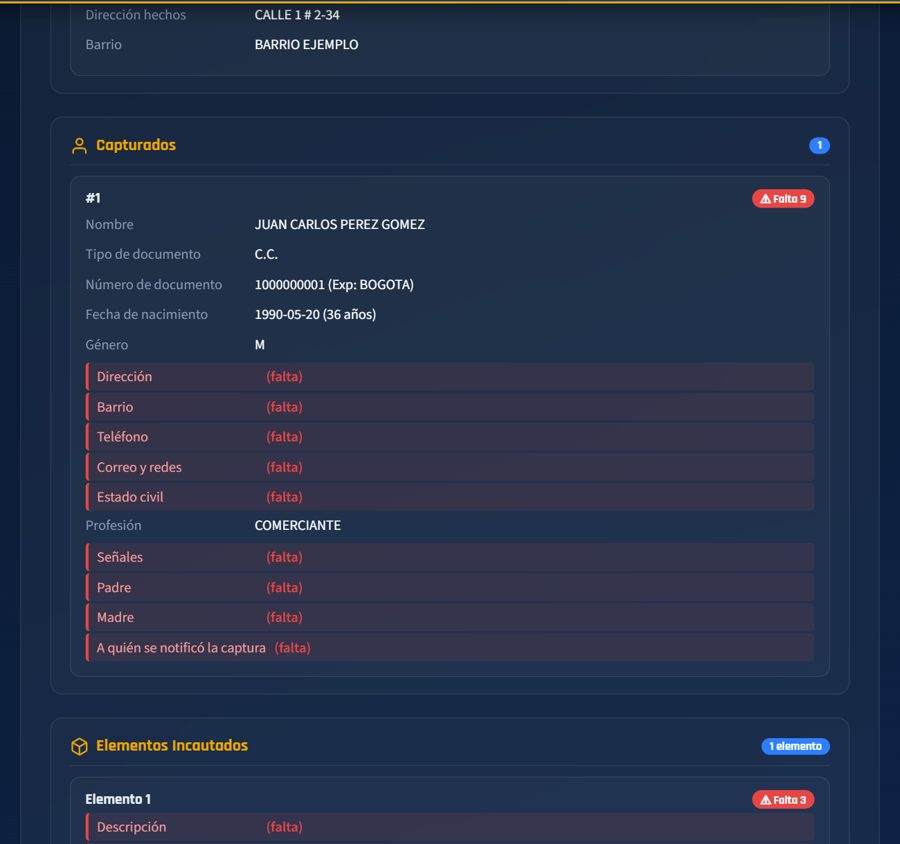
La app te ayuda en el Resumen, pero hay cosas que solo puedes confirmar tú:
Al final, en el Resumen, hay un botón por cada documento. Cuando generas uno, el círculo de su derecha se marca en verde.
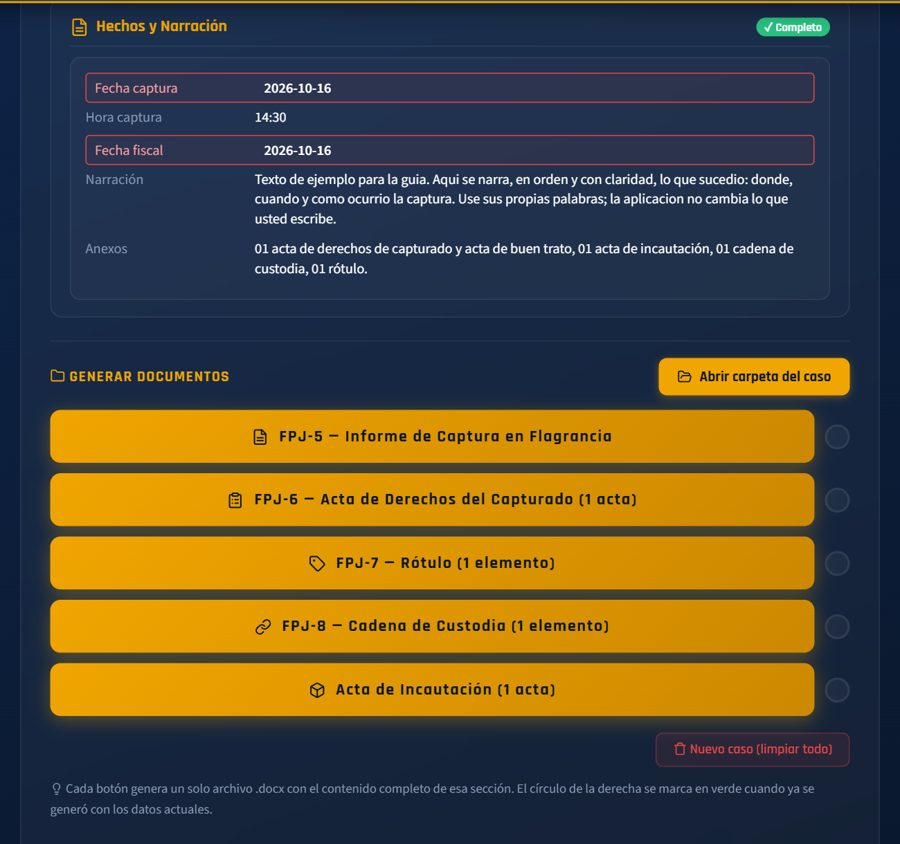
Los documentos no caen en Descargas: se guardan en Documentos\CapturaDocs, y dentro de esa carpeta cada caso tiene la suya propia, para que no se te revuelvan los papeles de varios casos.
<delito>_<apellido del capturado> — por ejemplo HURTO_PEREZ.PrimerRespondiente_<tu apellido>_<fecha>.La app crea esas carpetas sola, sin preguntarte dónde guardar cada vez. Si generas dos documentos con el mismo nombre, el segundo queda como (1), (2), etc. — nunca se sobrescribe uno anterior. El rótulo, por ejemplo, se llama rotulo_APELLIDO.docx.
En el paso "Resumen" hay un botón "Abrir carpeta del caso" que te lleva directo a la carpeta de ESE caso en el Explorador de Windows, sin tener que buscarla a mano.
En el celular los documentos se generan igual que en Windows, pero el teléfono no tiene una carpeta por caso como el computador: al terminar, se abre la hoja de compartir de tu teléfono (el mismo menú que usas para WhatsApp) y desde ahí eliges dónde quedan — guardarlos en el teléfono o en Archivos/Drive, o mandarlos por WhatsApp o correo.
Si quieres revisarlos o imprimirlos en el computador, envíatelos desde esa misma hoja. También puedes guardar el caso completo en un archivo .cdx (Guardar y enviar caso) y abrirlo con el botón Abrir de la app de Windows.
El rótulo (FPJ-7) se genera en tamaño de hoja normal, pero para pegarlo sobre un elemento pequeño — como un celular incautado — conviene imprimirlo reducido. Así es como lo estamos haciendo mientras no existe un tamaño reducido dentro de la propia app:
rotulo_APELLIDO.docx que descargaste, en Word.Está en la carpeta del caso, dentro de Documentos\CapturaDocs — lo más rápido es el botón "Abrir carpeta del caso" del paso Resumen. Ver sección 5 arriba..docx a Google Drive, lo abres, y en Archivo → Descargar eliges PDF) o LibreOffice Writer (gratis), que también tiene la opción Archivo → Exportar como PDF. El resultado es el mismo: un PDF listo para imprimir en 60%.CapturaDocs. Lo más rápido es el botón "Abrir carpeta del caso" del paso Resumen, que te lleva directo a la del caso que tienes abierto.nombre (1).docx, nombre (2).docx, etc. Revisa tu carpeta si no encuentras la versión que esperabas, puede que sea la que tiene el número al final.¿Te quedó alguna duda que no cubre esta guía?
Ver preguntas frecuentes Descargar la guía en PDF Ir a descargas